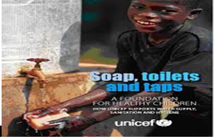

Personal hygiene involves those practices for instances; washing your hands, bathing, brushing your teeth and wearing clean clothing perform by an individual to care for one's bodily health and well been through cleanness. Some regular hygiene practices may be considered good habits by society, while the neglected of hygiene consider disgusting, disrespectful even threading. My main focus is to sensitize and educate people on how to take care of their body to prevent them from getting sick.
Is a way by which an individual perform to care for one's bodly health and well been through cleaness, by washing hands, bathing, brushing your teeth and wearing clean clothing may be consider as a good habits.
Most people want to keep their teeth and have attractive smiles. This requires frequent brushing and good dental habits. if you fail to brush your teeth they are more likely to become discolored, get cavities and possible fall out i, therefore, strongly recommend you (as well as indulging your children into the habit of brushing for parent) to brush your teeth twice daily and after every meal to prevent tooth decay.

Get the habit of washing your hands in order to destroy the spread of germs or diseases. It's quick, it simple and it can keep us all from sickness.
When should you wash your hands?
Bathing is the most important ways to maintain good health and protecting our self from infection, illness, and ailment. Maintaining cleanses is also important for our self-confidence, physical and emotional well-being. The purpose of washing is to remove dirty odor.
To youngsters, teenagers and those who care for them, there are 3 things to remember: • The first thing to accept is that you will probably never look like those perfect specimens in the media - but you can, and WILL look good to most people if you follow basic personal hygiene principles • Secondly, your actions and the way you behave are more important to most people than the way you look • Thirdly, good hygiene practices will help to keep you healthy, give you confidence and be pleasant for those around you
Most people hate to be talked about, especially in a negative manner. By ensuring that our body is clean and well presented, we are more assured of projecting a positive body image that reflects our personalities. healthy Children should be taught the importance of hygiene and how to achieve good hygiene very early to keep themselves and others and to reduce the risk of being bullied at school.
Poor hygiene can lead to poor health. If you have cut yourself, the wound should be cleaned and dressed suitably, this can help reduced the risk of infection and pain. Conditions such as head lice, athlete’s foot etc. should be treated immediately to prevent further and spread to others. Hand washing cannot be emphasized enough as this simple action can prevent a plethora of illnesses and disorders developing. Many people ‘forget’ to wash their hands after using the toilet or before handling foods; this can cause a great deal of illness and even death.
By being well presented, clean and tidy, people can feel more confident, especially in social situations. Our chances of succeeding either in work or social settings, or even with the opposite sex can be altered by maintenance of good hygiene. Maintaining hygiene practices helps to reduce the risks of ill health, but equally important affects how we and others perceive ourselves and can influence our levels of confidence and self-esteem which can affect many aspects of our lives.
This project is aiming at the general public being inside Sierra Leone or outside Siera Leone and nobody is excluded, my advice is that people should take good care of their body by doing proper mouth washing ,hand washing and bathing. Most of sierra leoneas today they it very difficult to to perform these actions (washing hands, bathing and brushing mouth), therefore let take these as a habits by bathing twice a day using soap and water, brushing teeth at least three times a day by using tooth paste, mouth wash, and water and finally washing your hands with soap and water before and after eating meals ,after using the toilet, before preparing food ,after touching death body before and caring sick person etc to maintain good health and protecting our self from infection, illness, and ailment. Maintaining cleanness is also important for our self confidence, physical and emotional well-being. The purpose of washing is to remove dirty odor.